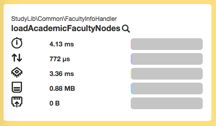
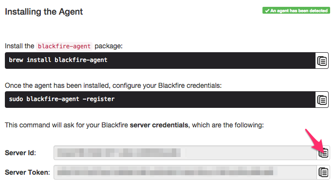
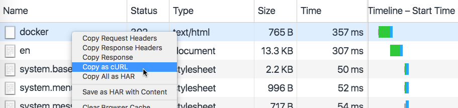
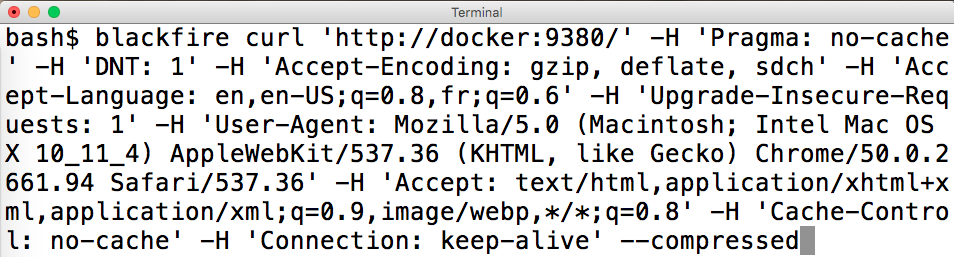
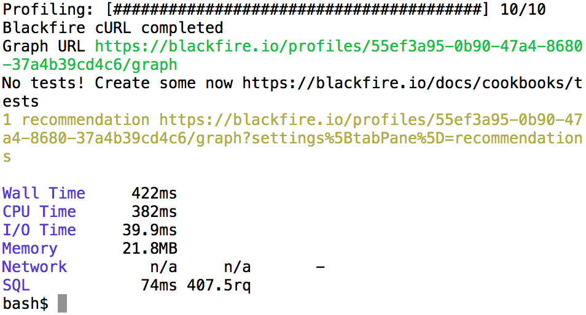
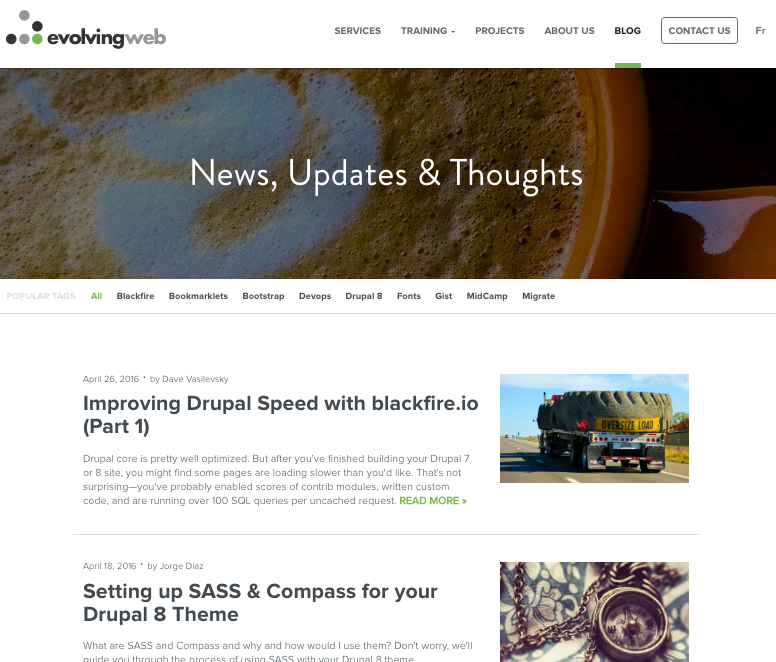
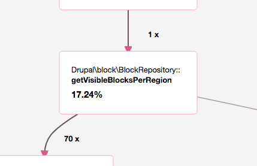
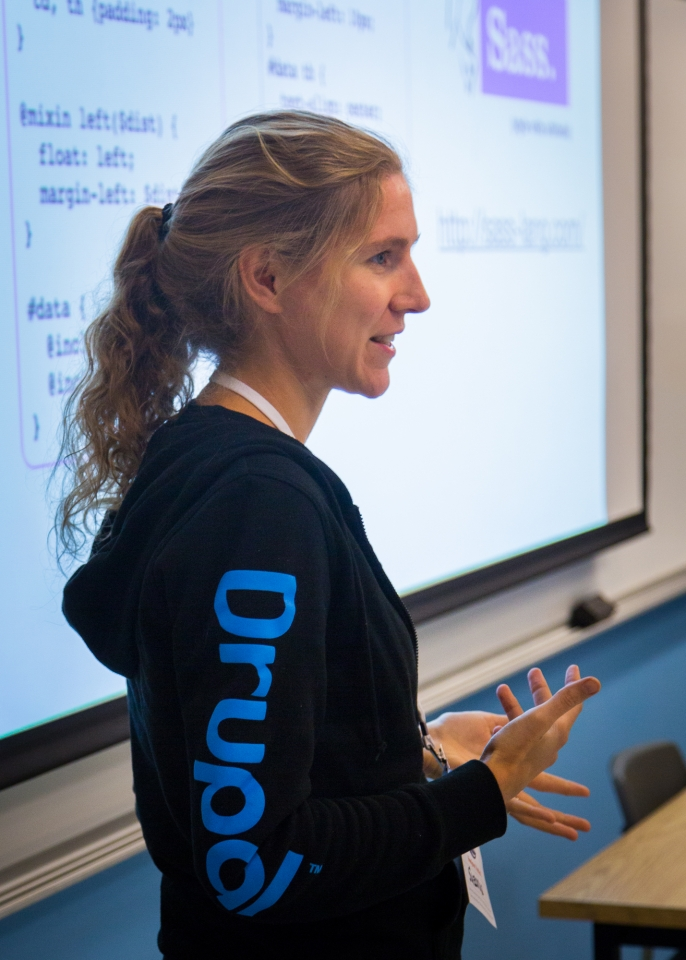

Using Blackfire.io to profile Drupal loading time
|
Alex Dergachev
alex@evolvingweb.ca
@dergachev on twitter, github, drupal.org
|
Dave Vasilevsky
vasi@evolvingweb.ca
twitter.com/djvasi
@vasi on github, drupal.org
|

About the speakers

- Drupal development, consulting and training since 2007
- Based in Montreal, clients in Canada and USA
- Very involved with the Drupal community
- Specialties
- Content migration
- Design and responsive themes
- Module dev: custom applications built on Drupal
- Infrastructure, Multilingual content, Solr search UI
- Extensive Drupal training program
Outline
- Profiling methodology + philosophy
- Blackfire demo and discussion
- Case studies from our projects
* Intro + motivation
* Profiling methodology + philosophy
* Demo 1: Blackfire UI Tour
* Blackfire basics: Terminology, advantages, installation
* Blackfire features (basic + intermediate)
* Demo 2: Copy as cURL
* Blackfire + Drupal tricks
* Demo 3: Block visibility
* Drupal performance considerations
* Q & A
Why page loading time is SUPER IMPORTANT
- User experience
- Concurrency + scalability
- "Throw more hardware at it"
- Financial implications
- Google's history
What profiling doesn't measure
- Browser rendering time (HTML, CSS)
- Network issues
- JavaScript run-time
- Asset fetching (imgs, fonts)
What profiling measures
- Time spent
- Resource usage: CPU, memory, DB, network, I/O
- Hooks into PHP engine, instruments each function call
Why it matters for Drupal
- Real Drupal sites can be heavy
- Core is usually well-optimized, but not always
- Contrib varies in quality, custom + legacy code more so
- Varnish isn't enough
- Working on slow sites makes us sad
Profiling gets results, fast
| Project | Improvement | Time spent |
|---|
| McGill academic calendar | 13% | 1 hour |
| Client X | 52% | 6 hours |
| Evolving Web D8 | 21% | 2 days |
| AllJoyn Certification | 57% | 3 hours |
| Drawn and Quarterly | 92% | 2 hours |
How to profile: M.A.F.I.A.
How to profile: Measure
- Figure out exactly what you care about (request, cookies)
- Variations, eg: pages, server env, disable modules…
- Use a profiler to analyze code
How to profile: Analyze
- Look for low hanging fruit, bottlenecks
- cachable calculations, bad SQL, blocking requests, unnecessary loads…
- Look for signs of overall sluggishness
- eg: swapping, Vagrant shared folders, server contention, missing opcache
How to profile: Fix
- Make a change
- Compare to baseline
- In Drupal, static caching means removing "slow" code just pushes it to later in request
How to profile: Iterate
- Measure again
- Know when to stop profiling
- Decide what's "fast enough"
- Log your runs, later it will be hard to remember all you've changed
How to profile: Applause
- I couldn't come up with a better "A"
Measurement tools
- Front-end: Chrome Developer Tools
- Benchmark: ApacheBench, JMeter
- Application Performance Monitoring: New Relic
- PHP Profiling: xhprof, Blackfire
Blackfire.io
- By SensioLabs, creators of Symfony and Twig
- Freemium, SaaS
- Great docs
- Started as a fork of xhprof
- Simpler installation
- Interactive callgraph, better UX
- Supports comparisons
- Actively maintained, support for PHP 7
- No overhead, you can leave it on all the time
Case study: McGill U
McGill University listing of courses and programs.
Case study: McGill U
Let's profile a page with Blackfire!
* Visit page
* Make a profile
* Tour the profile: read numbers?
* Metrics (overall, I/O, cpu, memory...)
* Call graph
* Hot path -> resources
* Function list
* Number of calls
* Expand: callees (time restricted to call)
* Let's find a problem function
* Hot path: theme()
* moriarty_preprocess_page is long for a preprocess hook!
* Follow down graph until the time changes significantly
* We get to loadAcademicFacultyNodes
* Calling node_load 36 times! Could be multiple
The slow code
public function loadAcademicFacultyNodes($language, $key){
foreach($this->faculties as $f){
if ($f->nid && $f->code){
if (!$language || $f->language === $language){
$node = node_load($f->nid);
if ($key && $f->$key){
$return[$f->$key] = $node;
} else {
$return[] = $node;
}
}
}
}
// ...
}
Iterate over faculties, load nodes one at a time.
* Loading nodes one at a time is slow! Should load them all together, to
minimize the number of DB queries.
A fix
public function loadAcademicFacultyNodes($language, $key){
foreach($this->faculties as $f){
if ($f->nid && $f->code){
if (!$language || $f->language === $language){
if ($key && $f->$key){
$nids[$f->$key] = $f->nid;
} else {
$nids[] = $f->nid;
}
}
}
}
$nodes = node_load_multiple($nids);
// ...
}
Collect the nids, load all nodes at once.
Case study: McGill U

Saved about 25ms!
A real improvement in under an hour of total work, from profiling to committing a fix.
Installing Blackfire
Sign in with GitHub, then view the super-easy Blackfire Install Docs.

This installs:
* `Probe`, a minimalistic PHP extension
* `Agent`, a daemon that connects probe to blackfire servers
* `Companion`, a Chrome extension
* `Client`, command-line client
It has has your API keys, and also instructions for Red Hat, OS X, Windows, docker, chef, and more. Install steps on Ubuntu:
wget -O - https://packagecloud.io/gpg.key | sudo apt-key add -
echo "deb http://packages.blackfire.io/debian any main" | sudo tee /etc/apt/sources.list.d/blackfire.list
sudo apt-get update
sudo apt-get install blackfire-agent blackfire-php
# fill in server-id and server-token
sudo blackfire-agent --register
sudo /etc/init.d/blackfire-agent start
# for command-line use, fill in client-id and client-token
blackfire config
# disable xhprof and xdebug php extensions
# restart apache or php-fpm
Blackfire features
- Comparison with baseline profile
- Command line profile trigger (for AJAX, cookies, POST requests, web services)
- Profiling command-line / drush commands
blackfire run drush.launcher cc all
- Sharing profiles publicly
The problem
Homepage is slow
Let's check it out in Chrome inspector's Network tab:

That's a pretty slow redirect!
Our browser is at the path `/en`, so that's what Blackfire would profile
But we want to profile the redirect itself!
Profiling
Use Chrome's Copy as cURL:

Profiling
Give the results of Copy as cURL to Blackfire:

Profiling
Blackfire does its magic:

Analysis
function tq_home_preprocess_page(&$variables) {
// ...
$lang = locale_language_from_browser($languages);
drupal_goto('<front>', $lang);
}
Moved it to a hook_init!
Case study: Client X
- Much better performance!
- We learned a lot about an unfamiliar codebase
- After a few more hours, implemented other dramatic improvements

Took just an hour or two.
Blackfire tips
- Aggregation (10 requests, averaged)
- Disable aggregation to control for caching and side effects
- Blackfire doesn't keep function arguments
Blackfire tips
- xdebug
- Turn off for profiling
- Turn on for analysis
- profiling overhead
- Tradeoff: memory vs time
- SDK: enableProbe / disableProbe
Can't use blackfire to compare different PHP versions
Case study: evolvingweb.ca
Case study: evolvingweb.ca
We already upgraded our site to Drupal 8!
D8 is great, we love features like Views in core, CKEditor, Twig…
But it's slower than D7

We learned a lot about D8, told people all about it.

Blog view
Really fast when cached!
No so fast after any node is edited, and D8 invalidates cache tags
Uncached requests
Aggregation makes it hard to profile uncached behavior.
So at the start of each request, pretend a node was edited:
class EwsiteSubscriber implements EventSubscriberInterface {
public static function getSubscribedEvents() {
$events[KernelEvents::REQUEST][] = ['killBlogCache'];
return $events;
}
public function killBlogCache(GetResponseEvent $event) {
$tags = ['node_list', 'node:239'];
\Drupal::service("cache_tags.invalidator")->invalidateTags($tags);
}
}
If we edit a node and then profile, Blackfire will have one uncached requests, then nine cached ones.
We still want reliable numbers.
Profiling
Now let's see why it's so slow:

That's part of D8 core, and it's taking 117 ms!
* We do have a lot of blocks
* But that's normal for a D8 site, so many things are blocks now
Analysis
public function getVisibleBlocksPerRegion(array &$cacheable_metadata = []) {
// ...
foreach ($this->blockStorage->loadByProperties(array('theme' => $active_theme->getName())) as $block_id => $block) {
$access = $block->access('view', NULL, TRUE);
// ....
}
}
To get a list of blocks, Drupal 8:
- Loads every single block in the current theme just to check access
- Checks access using visibility conditions—pretty complex!
* Iterates through lazy collections many times
* Merges metadata many times over
Does this sound familiar?
node_access!
Instead of loading and checking each node, uses a single DB query.
A fix
Built a module that determines block visibility in one DB query:
github.com/vasi/block_access_records

We saved over 80 ms on every uncached request!
* Similar to how `node_access` works, read more about it on our blog.
* Supports Drupal's built-in block visibility conditions
Caveats:
* Sites with custom block conditions may need to implement them
* Not super well tested
Blackfire paid plans
Profiler plan and higher
Blackfire paid plans
Premium plans
- Environments (team)
- Custom metrics
- Assertions + Scenarios + CI + notifications
- On-premise version
Drupal training program

- Public: Montreal, Ottawa, Toronto, DC Munich, NJ, NYC, Boston, Chiacgo
- Private: Health Canada, Parks Canada, Tourism Quebec, Trent U, McGill U, remote
- Enterprise teams, dev shops, remote
←
→
/
#

{kind=link}